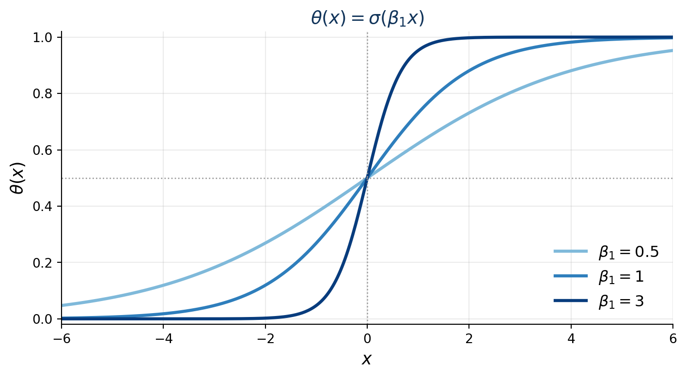
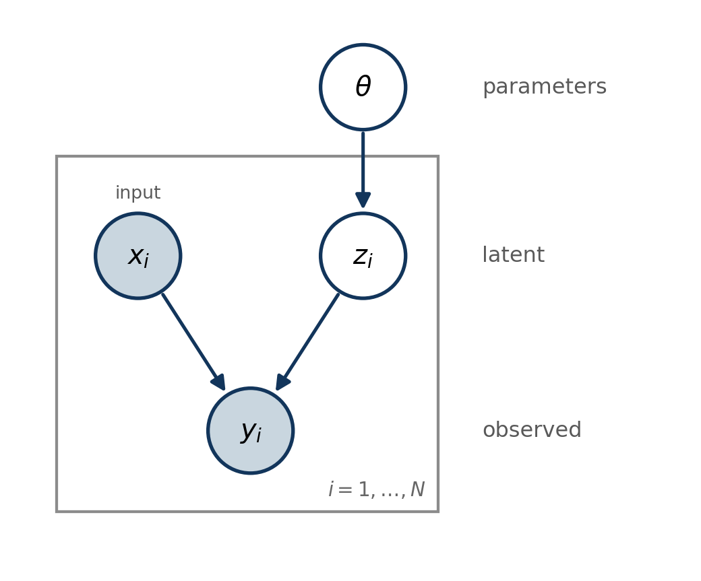

Overview
Department of Biostatistics and Computational Biology, University of Rochester Medical Center
BST 570-1 Probabilistic Machine Learning (4 credits)
Note
Assumed background: probability at the level of a first graduate course, linear algebra (matrices, eigendecomposition). No Python experience is assumed – that is what the labs are for.
Primary, both by Kevin Murphy and free to download:
Also useful:
| week | topic |
|---|---|
| 1 | Overview |
| 2 | Probability and Bayesian inference |
| 3 | Mixture models and the EM algorithm |
| 4 | Hidden Markov models; forward-backward |
| 5 | Tree structured models; belief propagation; phylogenetics |
| 6 | Factor graphs; sum-product and max-product |
| 7+ | Sampling: MCMC and sequential Monte Carlo |
| 11+ | Variational inference, the ELBO, VAEs |
The first half is exact inference: problems where we can compute the answer. The second half is what to do when we cannot.
Pick one paper. You present it in the week its topic is covered, so papers on early topics need to be claimed early.
Message passing (week 6).
Markov chain Monte Carlo Sampling (week 8).
Sequential Monte Carlo Sampling (week 11).
Variational inference (week 14).
According to Tom Mitchell (CMU professor):
A computer program is said to learn from experience \(E\) with respect to some class of tasks \(T\) and performance measure \(P\), if its performance at tasks in \(T\), as measured in \(P\), improves with experience \(E\).
Here, “learn” means to find \(f\) that optimizes performance measure \(P\) at task \(T\). How?
Let \(\mathcal{Y} = \mathbb{R}\) and define a quadratic loss for each \((x_i, y_i) \in E\):
\[\begin{align} \mathcal L(E) = \sum_i (f(x_i) - y_i)^2 \end{align}\]A computer program is said to learn from experience \(E\) with respect to some class of tasks \(T\) and performance measure \(P\), if its performance at tasks in \(T\), as measured in \(P\), improves with experience \(E\).
Performance \(P\) at task \(T\) needs to improve with experience \(E\)… how do we ensure this?
Let us further assume \(f\) is a linear function of \(x \in \mathcal{X}\):
\[\begin{align} f_{\beta}(x) = \beta^T x, \end{align}\]then by minimizing \(\mathcal L(E)\), we are optimizing the parameters \(\beta\) of the linear model.
Essentially, learning in this context amounts to solving a linear regression problem:
\[ \hat{\beta} = \operatorname{argmin}_{\beta} \sum_i (f_{\beta}(x_i) - y_i)^2 \]
But how do we ensure that the performance \(P\) at task \(T\) improves with (additional) experience \(E\)?
Important
What does it mean for the performance \(P\) to improve on the task \(T\)? And, we didn’t specify what \(T\) is exactly.
Define \(T\) as prediction on unseen data:
\[ T : x_{\operatorname{new}} \mapsto \hat{y}_{\operatorname{new}} \]
Split \(E\) into train and test set. Let \(\mathcal D_{\operatorname{train}}, \mathcal D_{\operatorname{test}} \subset E\) denote the training and test data such that,
\[ \mathcal D_{\operatorname{train}} \cap \mathcal D_{\operatorname{test}} = \emptyset, \]
Optimize \(\mathcal L(f)\) on \(\mathcal{D}_{\operatorname{train}}\) to find \(f\) (for linear model, this amounts to finding \(\hat{\beta}\)).
Now, define \(P(f)\):
\[ P(f) = \sum_{(x_i, y_i) \in \mathcal D_{\operatorname{test}}} (f(x_i) - y_i)^2. \]
We do not directly optimize \(P(f)\) so how do we know that this procedure or learning algorithm improves on the future data?
Let’s assume that the dataset come from some distribution \(p\):
\[ (x, y) \sim p_{X,Y}. \]
If we can further assume that any new data \((x_{\operatorname{new}}, y_{\operatorname{new}}) \sim p_{X,Y}\), then
it is reasonable to expect that minimizing the training error produce good predictions on new observations.
Let \(\mathcal{Y} = \{0, 1\}\) and we assume that \(y_i | x \sim \text{Bernoulli}(\theta(x))\), then we may choose the sigmoid function:
\[\begin{align} \theta(x) = f_{\beta}(x) = \frac{\exp(\beta^T x)}{1 + \exp(\beta^T x)}, \end{align}\]and
\[\begin{align} \mathcal L(E) = \prod_i \theta_i^{y_i} (1 - \theta_i)^{1 - y_i}. \end{align}\]In this case, \(\mathcal L\) is a likelihood and we are essentially fitting a logistic regression model:
\[ \hat{\beta} = \operatorname{argmax}_{\beta} \prod_{i=1}^{N} p(y_i | x_i, \beta). \]
The sigmoid \(\sigma(s) = e^s/(1+e^s)\) squashes the linear score \(s = \beta^\top x\) into \((0, 1)\); \(\theta(x) = 0.5\) is the decision boundary.

What about \(P\) and \(T\)?
Several choices (select one or all):
Note
The performance will vary depending on the choice of the loss function \(\mathcal L\) and the class of functions \(f \in \mathcal F\).
Population risk:
\[ R(f) = \mathbb E_{(X, Y) \sim p}[\mathcal L(f(X), Y)]. \]
\[ R_{\operatorname{train}}(f) = -\frac{1}{N} \sum_{i=1}^{N} \log p(y_i | x_i, \beta), \] and \(f\) is selected to optimize the risk (minimize).
Note
In both cases there is a quantity \(z\) we never observe but want to reason about. That is the latent variable, and most models in this course have one.
Generally speaking, we can separate the quantities into three components.

\[ p(x, y, z, \theta) = p(\theta) \prod_{i=1}^{N} p(x_i) \, p(z_i \mid \theta) \, p(y_i \mid x_i, z_i) \]
The model is written forwards, from \(\theta\) down to \(y\). Every question we care about runs backwards: we see \((x, y)\) and want \(z\) and \(\theta\). That reversal is what Bayes’ theorem does, and doing it efficiently on larger versions of this picture is the entire course.
Note
You will see this diagram again with the plate holding a mixture component, a Markov chain, or an evolutionary tree. The notation stays the same throughout.
There are three questions we can ask.
What hidden quantities explain my observations?
\[ p(z, \theta | x, y). \]
Examples:
Note
Note that we are not after a single quantity \(z\) or \(\theta\) but a probability distribution around these quantities. In other words, we want uncertainty quantification via probabilistic modeling.
What does it mean to “infer” and “learn”?
Given observations \(x\), hidden variables \(z\), and parameters \(\theta\): how do we estimate \(\theta\) while accounting for the uncertainty in \(z\)?
Given the experience \(E\) (our data),
What will happen next?
\[ p(y_{\operatorname{new}} | x_{\operatorname{new}}, E) \]
We can now generate new data from the model:
\[ x, y \sim p(x, y | \theta). \]
Examples from this course:
Note
Every algorithm we study – belief propagation, MCMC, variational inference, Hamiltonian Monte Carlo, and VAEs – is simply a different way of performing inference in probabilistic models.
“Probability does not exist.” — Bruno de Finetti
Two people with different information assign different probabilities to the same event, and neither is wrong. A card face down on the table is a definite card; your uncertainty about it is not a property of the card.
Famous game show:
Should you switch from \(i\) to \(j\)?
Important
Everything turns on the host’s rule. The host is not opening doors at random: the choice is constrained by knowledge you do not have, and that constraint is what makes the observation informative.
If the car is behind \(i\), the host chooses door \(j\) at random.
What is the probability that the car is behind each door?
Let \(N = 10{,}000\).
Prior belief: you do not have any information so the car is equally likely to be behind each door: \(1/N\).
You choose door no. 1.
Observation: host opens all of the doors except door no. 1 and no. 387.
Is your belief on where the car is hidden updated? How would you update your belief?
Let \(H_n\) represent the hypothesis that the car is behind door \(n\).
Let \(Y \in \{1, ..., N\}\) denote the observation: which door is not opened by the show host.
Derive the posterior:
\[ P(H_n | Y = j). \]
\[ P(H_n | Y = j) = \frac{P(Y = j | H_n) P(H_n)}{P(Y = j)}. \]
\[ P(H_n) = 1/N. \]
What is \(P(Y = j | H_n)\)?
Note
We stop here on purpose. Work out the likelihood and the posterior before next week; we finish the derivation in lecture 2.
Probability lives in the relationship between a question and the information available, not in the object itself. Monty Hall is exactly this: the game show host and the contestant assign wildly different probabilities to the same door, and both are correct.
The cost is computational: posteriors are usually intractable. That difficulty is the subject of this course.
conda installed on your computer, you can keep miniforge installation.